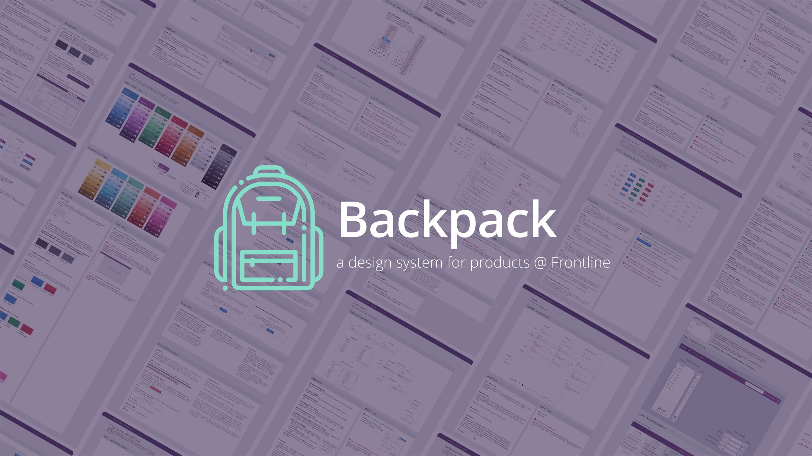
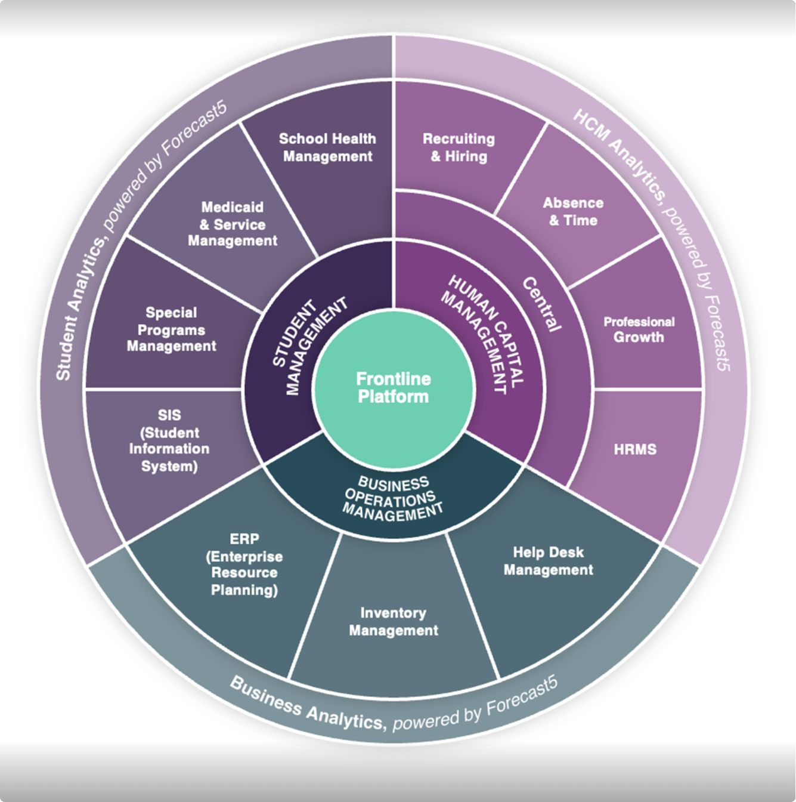
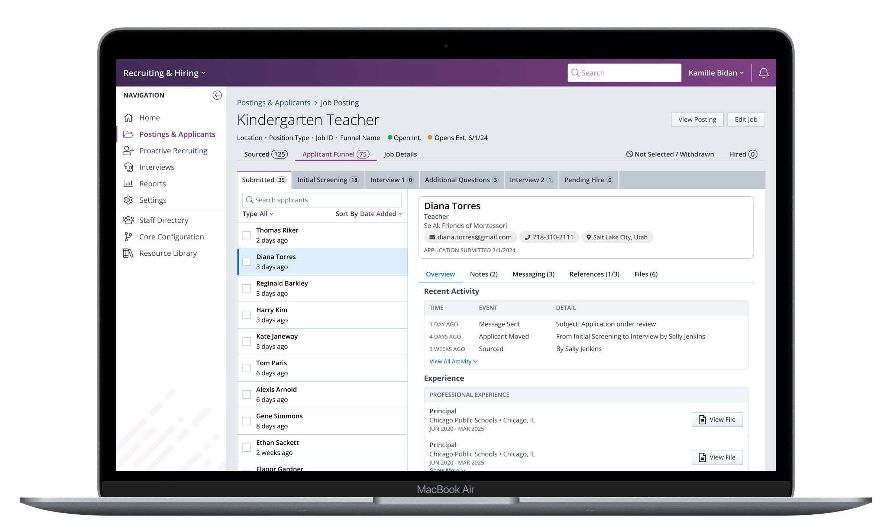

Frontline Education
Backpack Design System
Building and championing a design system even after resources were denied.

Context
When I joined Frontline in September 2022, the company was a portfolio of roughly 30 products acquired over many years, each with its own patterns, conventions, and visual language. There was no shared component library and no common product language across teams. An earlier attempt at a design system had stalled and never got adopted.
Leadership had already decided the new system would be based on Frontline Central, one of the company's most established products. My job was to turn that decision into something designers and developers could actually use.

Building the foundation
I built the system's Figma architecture from the ground up: separate libraries for foundations, components, and patterns, audited out of Frontline Central's existing UI. Between September 2022 and March 2023, I documented usage rules, built the variables and styles, and worked with other designers to construct the component set. By May 2023 the whole design team had adopted it. It's now known internally as Backpack, and the asset library holds 336 components.
I also became the de facto component architect and QA reviewer for the rest of the team. Most designers were still building their Figma proficiency, having previously been using Invision, so I reviewed — and often rebuilt — the components other people made, to keep the system internally consistent and make sure the components were robust.
Stopped in my Tracks
By August 2023, developers outside the design team were requesting Figma access to reference the system directly. Without a coded component library, every dev had to eyeball the Figma file and rebuild each component from scratch. The design system existed, but was trapped in Figma.
I brought my manager two ways to close that gap: stand up a small team, a PM plus dedicated dev resources, to build and govern a React library, or pull a couple of devs part-time and let me function as both PM and designer until the library was built out.
Both were rejected. The CPO at the time didn't see enough value to justify moving people around or dedicate resources to the project.
Rather than let that stall the system, I built "exploded view" specs for each component with every measurement, spacing value, and state broken out and labeled directly in Figma so a developer with no library access could reproduce a component accurately instead of guessing. It wasn't a substitute for a real library, but it was the best I could do under the circumstances. As the months passed, more and more teams began referencing the system, but they were still building everything from scratch, and with so many different copies being made, inconsistencies were inevitable.
Finding an opening
In February 2024, I heard rumors of an engineering team building component library for one of the products in our People Solutions group. I tracked down who owned it, a senior front-end developer, and asked him to walk me through the initiative.
Their plan was to build on Tailwind with minimal customization: essentially unstyled utility components, then theme them to their product. I pitched reskinning their Tailwind components to match Backpack instead. He wasn't thrilled by the idea at first, as it would add scope to the project, requiring his team to update the rest of their product to match Backpack as well.
I walked him through the system and the robust documentation I'd built, and he saw the value of having a single source of truth for the components his team was building. It would take the guesswork out of building future additions to the product and speed up development. Essentially pivoting to adopt the design system was a way to take a pile of open questions off his team's plate. He agreed, and engineering built the library straight off my Figma specs.
Outcome
The React library gave developers what the exploded-view specs never could: components they could pull from directly instead of rebuilding by hand. The library also spread further than it was scoped to. It was originally meant for just two products, but once other product leaders learned it was an extension of Backpack, four more products began using it. Sharing components made it easier for those six products to begin building cross-functional experiences, addressing one of the biggest complaints our customers have, that Frontline products don't really work well together.
When a new CPO joined and made design system investment a priority, he set aside dedicated headcount — a new PM, a new dev team, and another designer — now kicking off a full visual overhaul and rollout on the foundation I'd already put in place. The products using that shared component library are now first in line to benefit from the updated styles and patterns, which will boost their usability and customer satisfaction.

On Reflection
If I were starting over, I'd begin with a mature third-party component library rather than building Backpack from scratch. Frontline's interfaces rarely use anything that wouldn't be covered by one of the larger UI kits out there. Starting from something proven would have freed up the bulk of my time for adoption and governance, which is where the actual bottleneck turned out to be.
This project was a crash course in the organizational and political challenges of such a large product portfolio, and it taught me that the work is as much about people and process as it is about pixels and code.